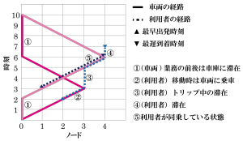
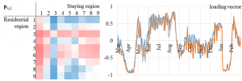

Research
朝倉研究室は、2011年に朝倉教授が神戸大学から東京工業大学に着任したときに設立されました。
交通工学、とりわけ交通ネットワーク上でのヒトやクルマの動きの観測・調査および解析・評価が中心テーマです。
私たちがふだん何気なく行っている交通行動は、大学や会社に行ったり、買い物やレジャーに行ったりと、多岐にわたる活動を行うためには不可欠な行動です。このような交通行動を行ううえで、道路や鉄道などの交通機関が「持続可能」な方法で、かつ 「安全に」「効率的に」「魅力的に」運用されることは、将来にわたって私たちの生活を豊かにしていく上で重要なことでしょう。朝倉研究室では、このような交通の運用を達成することを目指して研究活動を行っています。
高速道路に設置されているトラフィックカウンタなどのセンサから得られる各種データや、 GNSS機能付き携帯電話を用いたプローブパーソン調査をはじめとした行動調査など、多種多様なデータを活用しながら、 平常時の交通だけではなく、災害のような異常時・非日常時も含めた交通現象の分析や交通システムの運用のあり方について研究を進めています。
最近の主要なテーマを以下に記します。論文のページもご参照ください。
ライドシェアリング・自動運転

次世代の交通システムは、情報通信技術の発展や、人々のライフスタイル・社会構造の変化を考慮したものでなければなりません。とくに、自動運転やライドシェアリングはこれからの交通システムを駆動していく要素となるでしょう。これらの導入は、一人ひとりの行動パターンを大きく変えるだけでなく、渋滞・エネルギー消費・環境公害などの諸問題を解決する大きな可能性を秘めています。
ライドシェアリングの導入にあたって、乗り合いを行うユーザのマッチング方法の提案、自動運転車両や通行料課金との統合分析などを、様々なタイプの最適化問題として検討しています。また、実社会への展開を視野に入れて、フィールドでの実験や実データに基づく研究も行います。
交通流理論・ネットワー ク交通流解析
交通流理論では，一本の道路に沿って乗り物が移動する様子を考えます．ネットワークとは，複数の道路が網の目のように繋がったものです．現代社会のヒト・モノの交通は全てこれらの理論に関係しているといっても過言ではありません．
交通流理論・ネットワーク交通流解析の手法を用いて，部分的な情報・データに基づく全体状態の推定，大量のコネクテッドカーデータからの重要な事象の発見，災害時の避難を速やかに完了し被害を最小限に抑えるための交通最適化，交通ネットワークの脆弱性など，様々なスケールの問題について研究しています．
画像をクリックすると関連論文に移動します
新時代のデータ取得・分析手法の提案

Copyright © 2022 | Asakura Laboratory